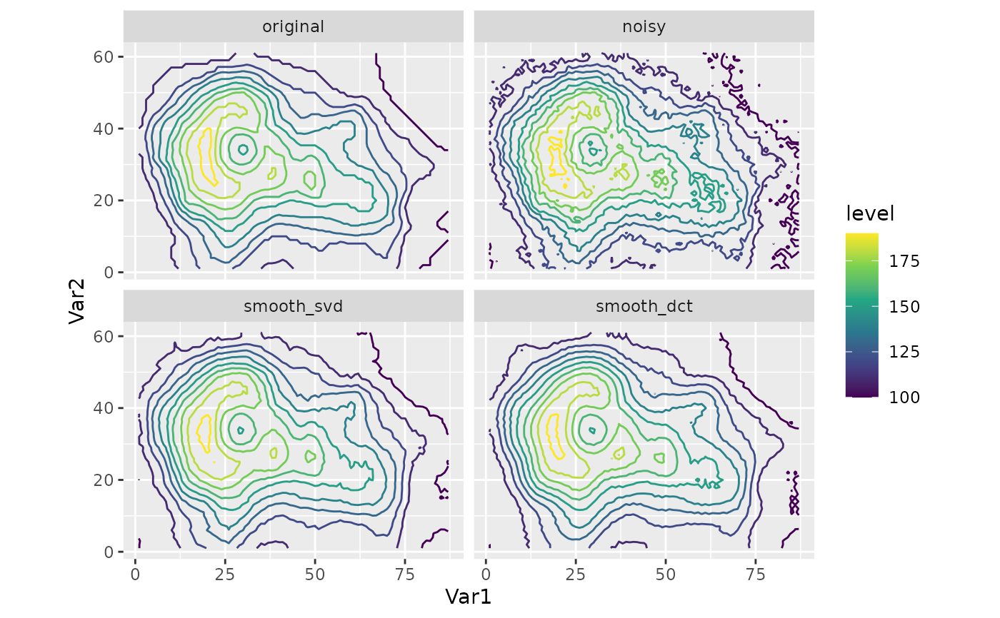

Smooth a 2D field using a user-supplied method.
Smooth2D(x, y, value, method = smooth_svd(0.01))
smooth_dct(kx = 0.5, ky = kx)
smooth_svd(variance_lost = 0.01)Vector of x and y coordinates
Vector of values
The method to use smooth. Must be a function that takes a matrix
and returns the smoothed matrix. Build-in methods are smooth_svd() and smooth_dct().
Proportion of components to keep in the x and y direction respectively. Lower values increase the smoothness.
Maximum percentage of variance lost after smoothing.
A vector of the same length as value.
smooth_svd() computes the SVD of the field and reconstructs it keeping only
the leading values that ensures a maximum variance lost.
smooth_dct() computes the Discrete Cosine Transform of the field and sets
a proportion of the components to zero.
library(ggplot2)
# Creates a noisy version of the volcano dataset and applies the smooth
volcano <- reshape2::melt(datasets::volcano, value.name = "original")
volcano$noisy <- with(volcano, original + 1.5*rnorm(length(original)))
volcano$smooth_svd <- with(volcano, Smooth2D(Var2, Var1, noisy, method = smooth_svd(0.005)))
volcano$smooth_dct <- with(volcano, Smooth2D(Var2, Var1, noisy, method = smooth_dct(kx = 0.4)))
volcano <- reshape2::melt(volcano, id.vars = c("Var1", "Var2"))
ggplot(volcano, aes(Var1, Var2)) +
geom_contour(aes(z = value, color = after_stat(level))) +
scale_color_viridis_c() +
coord_equal() +
facet_wrap(~variable, ncol = 2)
